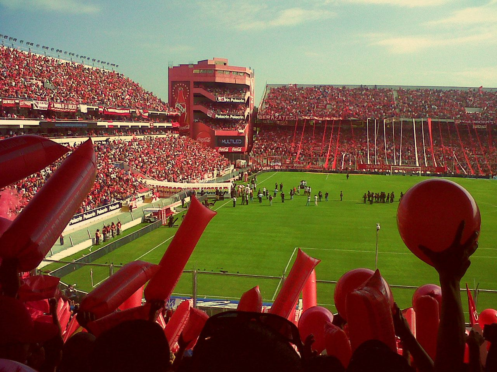

El Estadio "LDA" (Libertadores de América), es el estadio del Club Atlético Independiente. El 28 de octubre de 2009 fue reinaugurado oficialmente, tras la demolición de gran parte de la antigua estructura de cemento, en el encuentro entre Independiente y Colón de Santa Fe.
El nuevo estadio debe su nombre a las siete Copas Libertadores de América ganadas por Independiente y está inspirado en el clásico estilo inglés compuesto por 4 tribunas dobles.
El renovado Estadio Libertadores de América costó inicialmente alrededor de 50 millones de dólares. Sus esquinas estan compuestas por estructuras denominadas caracteristicamente ‘’Gargantas del Diablo’’.
El estadio, a marzo de 2020, posee una capacidad aproximada de 49.592 espectadores, estando 42.069 localidades habilitadas. El mismo se encuentra en la calle Ricardo Enrique Bochini 701.
Y como olvidarse de "La Doble Visera", estadio tan simbolico para Independiente. Siendo inaugurado el 4 de marzo de 1928, el primero en Argentina y uno de los primeros en el mundo en ser construido con hormigón armado. Dicho estadio se encontraba ubicado en las calles Alsina y Cordero